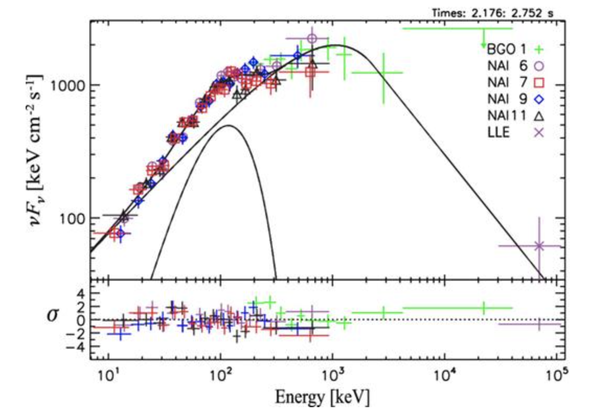
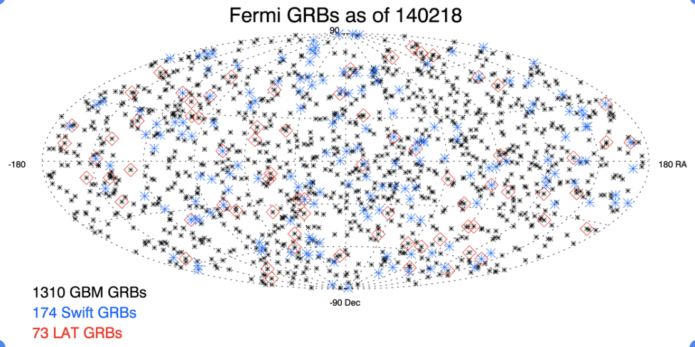

Research interests
Our research focus on analyses and modelling various aspects of the physics and observations of gamma ray bursts (GRBs). They are the most energetic explosions known to occur in the Universe. They are associated with the death of massive stars or the merger of compact binaries like neutron star - neutron star or neutron star - black hole.
Our research interests involve:
- Data analysis of GRBs observed by space based telescopes such as Fermi gamma ray space telescope, Neil Gehrels Swift, AstroSat etc.
- Polarisation measurements of GRB in hard X-rays using AstroSat data.
- Modelling of the spectral observations using various physical models.
- Hydrodynamic simulations to study the interaction of jet with immediate burst surroundings.
- Application of Machine learning techniques to explore the large database of GRB observations.
- Multi-messenger observational analysis of GRBs.
Research Highlights
Identification of the thermal component with a high statistical significance of 5 sigma in GRB 110721A, which is one of the brightest GRBs detected Fermi gamma ray space telescope.
Iyyani et al. 2013; Axelsson et al. 2012

Gamma Ray Burst
(Excerpts from the review article, Iyyani 2018)
During the summer of 1967, American military satellites named Vela 3 and Vela 4 detected some strong gamma-ray signals from unidentified sources. The information about the discovery of these transient events of gamma ray emission called as gamma ray bursts (GRBs) were declassified and published in 1973. Thus began the extraordinary era of observations and study of gamma ray bursts using various space based telescopes. GRBs are extremely intense flashes of gamma rays observed for a short duration at an average rate of nearly one event per day. These events are extremely bright and outshines the entire gamma ray sky including our Sun. Just for comparison, the typical energy doled out during this small period of time of a few seconds is nearly equivalent to what our Sun would have emitted over its entire lifetime (10 billion years).
A GRB event can be divided into two main parts: the prompt emission consisting of the gamma ray emission produced immediately for a few seconds, and the afterglow phase which includes emission from gamma rays to radios extending over a longer period of time.
Some of the key characteristics that have been inferred about the GRB are:
Compact source
The observed fastest variability in the light curves is of the order of a few milliseconds. This suggests that the central engine is a very compact source either a stellar-mass black hole or a magnetar.
Relativistic outflow
If the outflow is non-relativistic and the observed huge amount of energy is deposited in this small compact region would have resulted in photon-photon annihilation producing electron-positron pairs. Thus, photons of energy above 1 MeV (pair production threshold energy) would not be observed. This is referred to as the compactness problem. However, since photons of energy as high as a few GeV are observed, it requires that the outflow is moving at relativistic velocities wherein the emission is beamed towards the observer such that the photons now move relatively more radial to each other as a result lowering the scattering cross section for pair production. This phenomenological argument leads to the inference that the outflow produced in the GRB is relativistic.
Jetted outflow
The observed high energy flux integrated over time results in total isotropic energy, Eγ,iso, comparable to the solar rest mass energy (∼ 1054 erg). On the other hand, a supernova emits a total energy of 1051 erg which is only 10−3 th of the solar rest mass. This issue could be resolved if we assume the outflow is ejected in the form of a jet with an opening angle, θj, rather than isotropically, which then brings down the total energy to ∼ Eγ,iso θj2, which is now more consistent with that of a core-collapse supernova. The observational evidence of a jet has been obtained by the breaks observed in the X-ray and optical/IR afterglow light curves (Racusin et al. 2009; Kobayashi & Zhang 2003; Castro-Tirado et al. 1999).

All sky map of GRBs detected by Fermi gamma ray space telescope.
This map tells us that GRBs are coming from all directions in the sky.
There are two types of GRBs: Short and Long
GRBs with a duration lesser than 2 seconds are called short GRBs and those with a duration greater than 2 seconds are called long GRBs.
Progenitors
Merger of compact Binaries
Short GRBs are produced as a result of the merger of binary neutron stars or a neutron star and a black hole. Recently, with the coincident detection of gravitational waves measured by LIGO along with short GRB 170817A, confirms the hypothesis that at least a fraction of the short GRBs are produced from the merger of binary neutron stars (Abbott et al. 2017a, b).
Hypernova
Long GRBs are a result of the core collapse of massive stars. This hypothesis was confirmed when a supernova was detected coincidently, both spatially and temporally with GRB 030329A (Stanek et al. 2003; Kawabata et al. 2003; Mazzali et al. 2003; Langer et al. 2008).
Advent of the era of Multimessenger Astrophysics
Detection of Ultra-high Energy neutrino from a flaring Blazar
GRBs being the most energetic explosions known to occur in the Universe, are therefore also considered to be potential sources or sites where ultra-relativistic cosmic rays and neutrinos are produced (Samuelsson et al. 2018). However, there has been no successful detection made yet.
Coincident detection of gravitational waves and flashes of light
The event GW/GRB 170817A, have established that short GRBs are powered by compact binaries. However, there still remains a lot of questions to be answered such as what is the post merger remnant, is it a black-hole or a magnetar?, structure of the GRB jet?